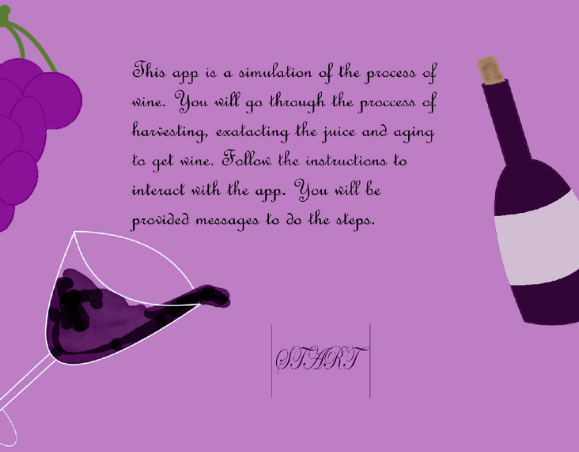

The “Winery Interactive Simulation” was an individual academic project in which I had to create a simulation to show the process of an activity using Java. The activity I chose was how to make wine using the ancient process. The major difficulty of this project was that I had to use recursion in the simulation. I overcame this difficulty by using a recursive function to draw moths rotated at a different angle until the condition was fulfilled. Another difficulty was using Perlin noise in the project. I decided to use Perlin noise twice to give a sense that the action was being made such as getting water on from the well and in the fermentation process. Having classes for each object the user has to interact with in the simulation made it easier to organize the code and to make the functions for when the objects were clicked or dragged to make an action with another project. For example, the user must drag the shovel to the plant pot. So when the class object of the shovel touched the class object of the plant pot it will trigger an interaction between those two classes.
There are two types of interactions that the user can do to follow the simulation. These two interactions are dragging and clicking instances of objects. For the dragging interaction, I created a bounding box on every object and checked if the two bounding boxes were colliding with each other.


After each interaction the simulation changes to a different state, this way I control what objects can be clicked in each state to prevent the user from clicking another object. Also, the objects and background change depending on the state the simulation is in. This image is a part of the paintComponent() function which draws the objects and backgrounds depending on the state.

These images are a part of the actionPerformed() function and the mouseClicked() function which check in which state the simulation is in and then checks if the interaction for that state is completed before moving on to the next state.


Drew all the visual elements of the simulation on the application Clip Studio Paint achieving a proper style for the topic of the program. Having different backgrounds such as the outside daytime, outside night, and inside the house made the transitions and animations between places more effective and easy to follow.